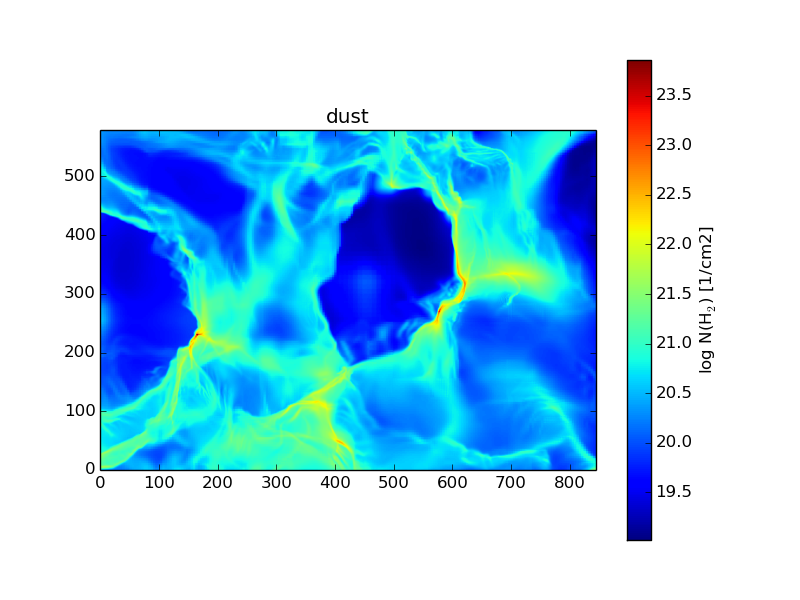

Non equilibrium chemistry and destruction of CO by X-ray flares
Sources of X-rays such as active galaxies and X-ray binaries are often variable by orders of magnitude in luminosity over time scales of years. During these flares and for some time afterwards, the surrounding gas is out of chemical and thermal equilibrium. We introduce a new implementation of X-ray radiative transfer coupled to a time dependent chemical network for use in 3D magnetohydrodynamic simulations. (J. Mackey, S. Walch et. al., 2018)
Figure: Column density of H$_2$ (left), CO (middle), and the ratio of N(CO)/N(H$_2$) (right) for a fractal molecular cloud irradiated by an external X-ray radiation field of different strengths (see left labels) for 4 Myr. CO is more effectively destroyed than H$_2$, leading to a decreasing CO-to-H$_2$ ratio with increasing X-ray flux.
Bipolar outflow from protostar formation
Figure: Column density plot of a turbulent Bonnor-Ebert sphere at $t = 120$ kyr. The core collapsed and formed a protostar that launches a bipolar outflow. Individual outflow bullets can be seen, they are labelled from A to E, according to the ejection history. Bullet A is the oldest one at low velocity; Bullet B and C have higher velocity and overrun bullet A; Bullet D hits the leading shock front and decelerates; Bullet E is about to hit the leading shock front.
Synthetic column density map based on dust

Figure: Synthetic column density map based on dust emission for SILCC zoom-in simulations.